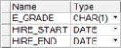
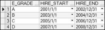
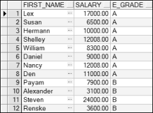
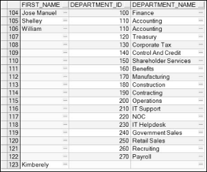

3.9 外连接
在介绍外连接之前，先要了解什么是内连接以及内连接和等值连接的关系。在标准SQL中，将两个表连接，仅返回匹配条件的行的连接称为内连接。等值连接是内连接的一种，因为等值连接仅返回满足等值条件的行。相对于等值连接而言，另外一种内连接就是非等值连接，也就是说连接条件不是“=”，而返回的行仅为满足这个非“=”连接条件的行。
3.9.1 非等值内连接
为了演示非等值内连接的效果，为HR用户新建了一个表，其表结构和表内容分别如图3.18和图3.19所示。具体如何创建表，在后面的内容中将会详细介绍。

图3.18 员工分类表结构

图3.19 员工分类表内容
从图3.18和图3.19可以看出，公司将员工分为A、B、C、D四类，分类依据为雇员的雇佣日期。现在需要查询出雇员的名字、薪水和所属分类，其SQL语句如下：
SELECT e.first_name, e.salary, eg.e_grade
FROM employees e,egrade eg
WHERE e.hire_date BETWEEN eg.hire_start AND eg.hire_end
这段SQL语句的比较条件是判断日期是否在一个范围内，不是“=”，所以不是等值连接，其返回的结果仅为满足比较条件的行，所以该连接是非等值内连接。执行该SQL语句，部分显示结果如图3.20所示。

图3.20 非等值内连接
3.9.2 左外连接、右外连接、全外连接、笛卡儿积
- 左外连接
左外连接又称左连接，指在两个表之间的连接，返回内连接的结果，同时还返回左表中未匹配的行，右表中相应字段置空。接下来对employees表和departments表进行左连接， employees表作为左表，departments表作为右表，使用左连接的SQL语句如下：
SELECT e.first_name, e.department_id, d.department_name
FROM employees e
LEFT OUTER JOIN departments d
ON (e.department_id = d.department_id)
执行该SQL语句，部分显示结果如图3.21所示。
图3.21 左外连接
从图3.21中可以看出，左连接在内连接的基础上，将左表（employees）中未匹配的行也查询出来，右表中相应字段为空。
上面是一种左连接的写法，看起来略微有些复杂，下面的SQL语句同样完成了上面左连接的功能，不过在书写和阅读上都容易许多。
SELECT e.first_name, e.department_id, d.department_name
FROM employees e,departments d
WHERE e.department_id = d.department_id(+)
这段SQL语句和等值连接类似，只是在等号的某一边加上了一个“(+)”，这个“(+)”应该被放置在不需要增加未匹配的行的表的一侧。采用“(+)”进行外连接，不存在左表和右表之分，并且不可以在比较条件的两边都放“(+)”。
- 右外连接
右外连接又称右连接，和左连接正好相反。接下来仍然对employees表和departments表进行右连接，employees表作为左表，departments表作为右表，使用右连接的SQL语句如下：
SELECT e.first_name, department_id, d.department_name
FROM employees e
RIGHT OUTER JOIN departments d
USING(department_id)
执行该SQL语句，部分显示结果如图3.22所示。
图3.22 右外连接
用“(+)”代替右外连接，SQL语句的具体写法如下：
SELECT e.first_name, e.department_id, d.department_name
FROM employees e,departments d
WHERE d.department_id = e.department_id(+)
- 全外连接
所谓全外连接，也称全连接，是指两个表在返回内连接结果的基础上，还返回左表及右表中未匹配的行，右表及左表中相应字段置空，其SQL语句如下：
SELECT e.first_name, department_id, d.department_name
FROM employees e
FULL OUTER JOIN departments d
USING(department_id)
执行该SQL语句，部分显示结果如图3.23所示。

图3.23 全连接
- 笛卡儿积
截止到现在，所介绍的多表连接查询都有连接条件，通过连接条件对连接进行限制。如果连接条件无效或者遗漏，其结果是一个笛卡儿积，其中所有行的组合都被显示出来，即第一个表中的所有行连接到第二个表中的所有行。
笛卡儿积会产生大量的行，例如第一个表中假设有100条记录，第二个表中有200条记录，使用笛卡儿积，结果就是两者相乘的20000条记录。这样的笛卡儿积一般来说没有什么用，所以除非有特殊的需求，应该保证连接条件正确有效，不要出现笛卡儿积的情况。